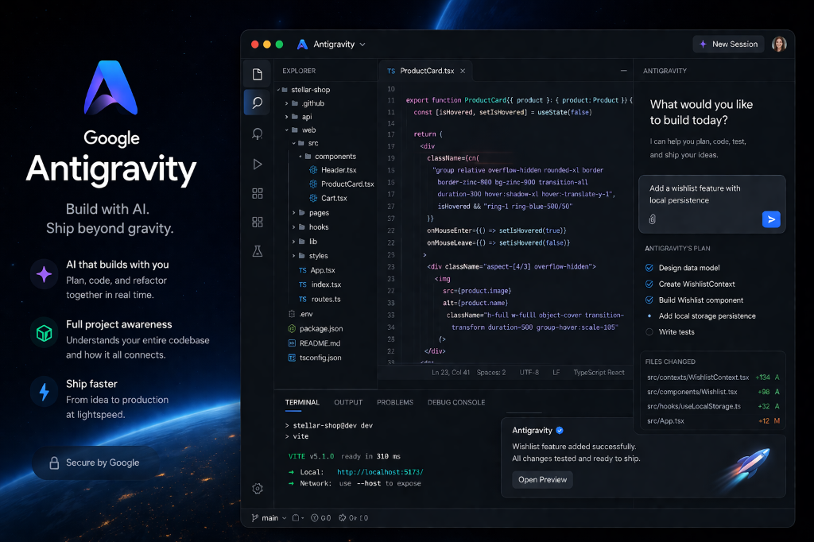

Google Antigravity: Just Fun, or a Masterclass in Frontend Development?

Here is a look at the technology and intent behind the Google Antigravity experiment.
What is Google Antigravity?
Google Antigravity is a well-known Google "Easter egg" that completely transforms the standard, organized search interface into a chaotic, interactive playground. While not an official product or a functional searching tool, it serves as a powerful demonstration of frontend development capabilities.
When accessed, the page applies simulated physics properties to every component of the standard Google UI, including the logo, search bar, and buttons. Instead of maintaining their fixed, grid-based positions, these elements appear to be affected by gravity, falling to the bottom of the viewport as soon as the page loads. Users can then interact with these "fallen" components, clicking and dragging them, watching them bounce off each other and the screen boundaries as if they are weightless, giving the experiment its "antigravity" name.
The Core Technology: Client-Side Scripting
The illusion of Antigravity is achieved entirely in the user’s web browser through the use of client-side scripting. There are three key technical components at play:
- DOM Manipulation: The JavaScript first identifies all the standard HTML elements that make up the search page (the Document Object Model, or DOM).
- Physics Engine (JavaScript): The script utilizes a JavaScript library, acting as a simple 2D physics engine similar to those found in browser games. This engine assigns physical properties, such as mass, velocity, collision boxes, and a simulated gravitational constant, to each of the DOM elements.
- Real-Time Positioning: The physics engine constantly calculates the position of every element, checking for collisions with other elements or the browser window's boundaries. The script then applies new CSS values (like translate and rotate) to reposition the elements in real-time.
Real-World Applications and UX Implications
While Antigravity itself is a creative novelty, the technologies and design principles underpinning it are highly applicable to practical web development:
- Gamification and Engagement: Subtle, polished uses of physics in animations can make user interfaces feel more responsive and high-quality, encouraging deeper user engagement. For instance, using realistic "inertia" while scrolling can improve the overall feel of an application.
- Data Visualization: The same physics libraries can be used to create complex and intuitive data visualizations, such as force-directed graphs, where relationships between data points can be visually understood as they naturally organize themselves.
- User Delight: These features aim to create a positive emotional connection with the brand. It shows users that developers care about the holistic user experience, including unexpected moments of fun.
Risks and Considerations for Integration
Integrating complex physics and dynamic animations into a standard business application comes with significant risks that must be managed:
- Performance: Physics calculations are computationally expensive. On older or lower-powered devices, this can lead to severe browser lag and high battery consumption, degrading the user experience.
- Accessibility: Complex motion can be problematic for assistive technologies. Screen readers may struggle to interpret a fragmented DOM, making critical navigation potentially unusable for visually impaired users.
- Usability: If an interactive feature interferes with a user’s ability to achieve their primary goal quickly and efficiently—like forcing them to "catch" a floating button—it is a significant UX failure. The primary goal should always be clarity and efficiency, not distraction.
If you are a business considering advanced interactive elements, it is often best to start small with subtle micro-interactions, like refining dropdown animations, and to always prioritize function and performance over purely cosmetic effects. The key is to find a balance where technical showmanship enhances the overall experience without compromising utility.